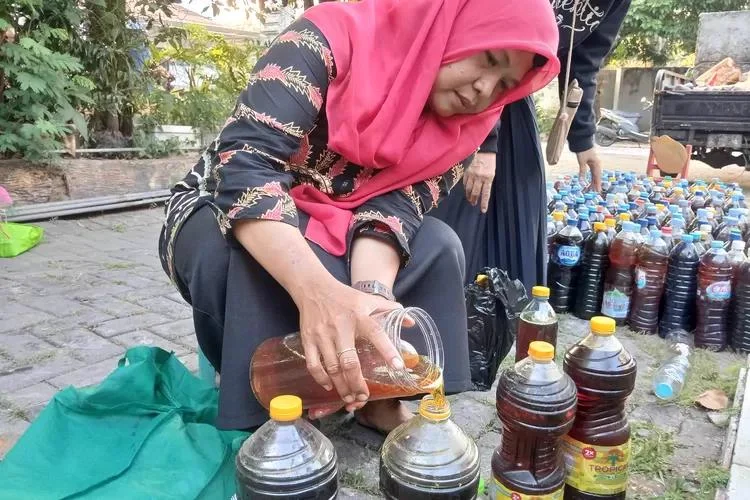
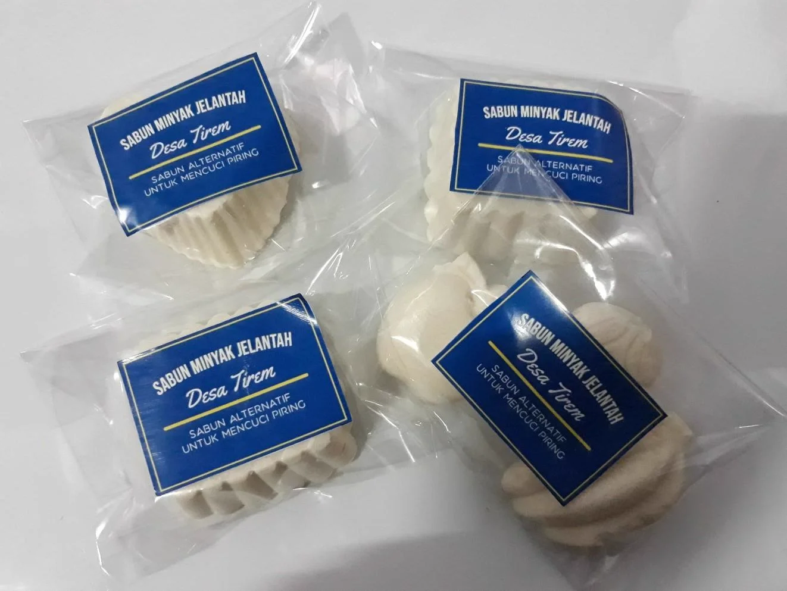
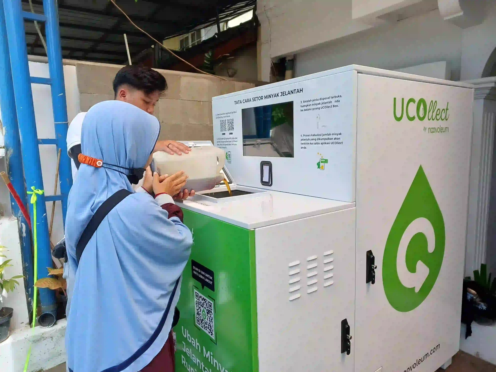
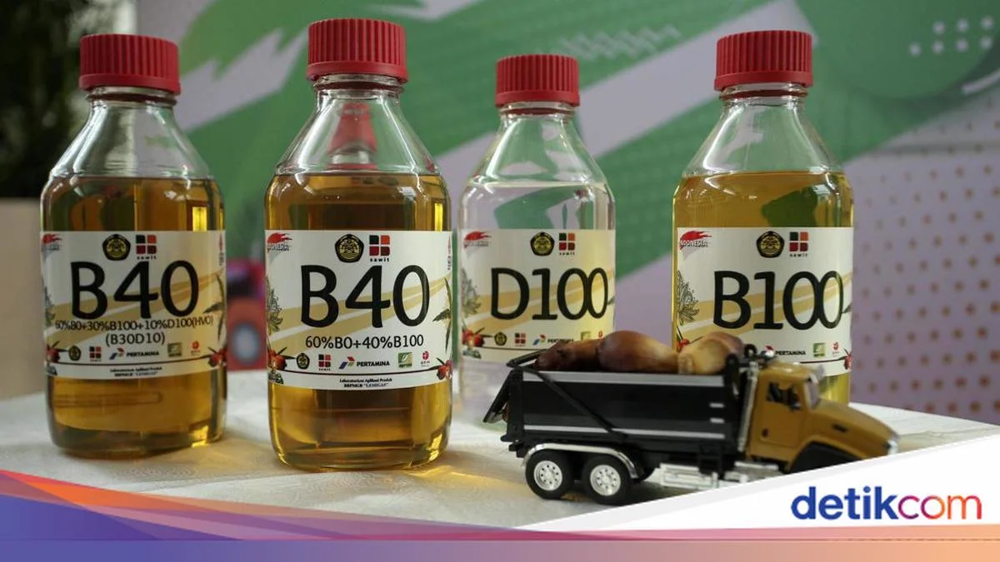
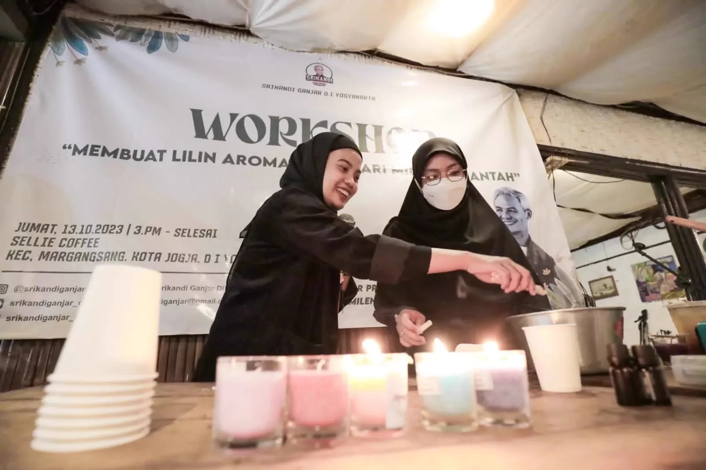
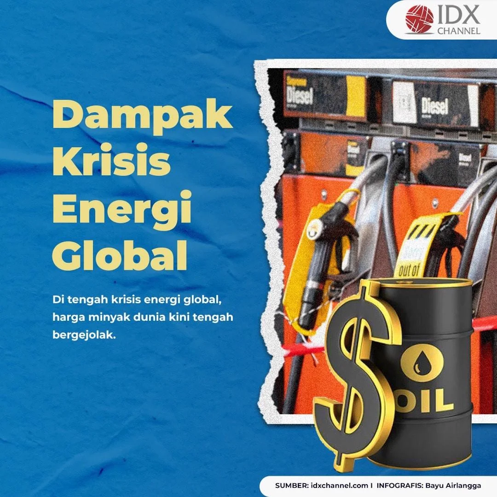
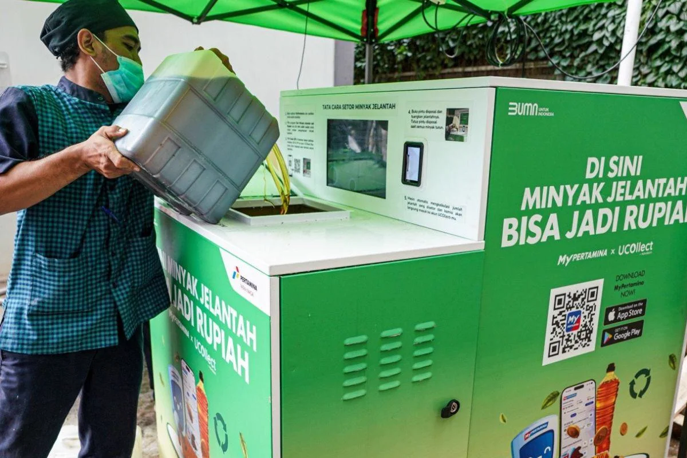
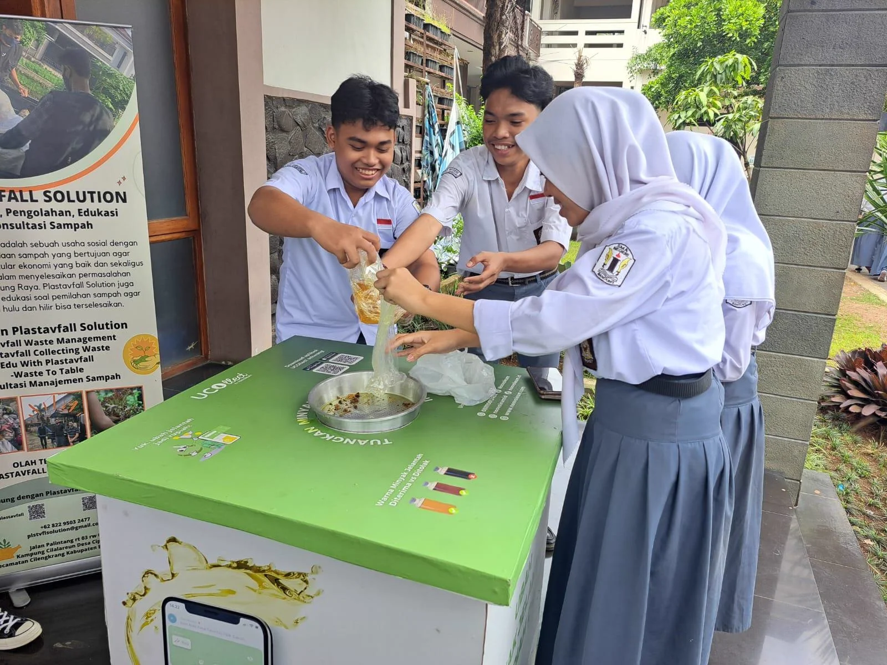

Katalog Berita & Solusi Pengelolaan Minyak Bekas
Halaman ini menyajikan berbagai solusi dan keberhasilan dari pengelolaan minyak bekas secara aman dan ramah lingkungan. Mulai dari pengumpulan, pemilahan, hingga proses daur ulang menjadi produk bernilai ekonomi. Dengan pengelolaan yang tepat, limbah minyak bekas dapat dikurangi sehingga tidak mencemari lingkungan.

Keberhasilan Pengelolaan Minyak Bekas di Purwokerto
Program pengelolaan minyak bekas di wilayah Purwokerto berhasil mengurangi limbah rumah tangga secara signifikan. Melalui sistem penjemputan dan pengumpulan terjadwal, masyarakat kini lebih sadar untuk tidak membuang minyak bekas sembarangan.
12 Januari 2026

Inovasi Produk Daur Ulang Sabun Jelantah
Minyak bekas kini tidak lagi dianggap sebagai limbah semata. Berbagai inovasi telah berhasil mengubahnya menjadi produk bernilai ekonomi seperti sabun ramah lingkungan. Produk ini tidak hanya mengurangi pencemaran, tetapi juga membuka peluang usaha baru bagi masyarakat.
20 Januari 2026

Solusi Efektif Pengolahan Limbah Minyak Bekas
Pengolahan minyak bekas dapat dilakukan dengan langkah sederhana seperti penyaringan, penyimpanan yang benar, hingga pengiriman ke pihak pengelola. Dengan solusi yang tepat, pengelolaan limbah minyak dapat dilakukan secara berkelanjutan dan berdampak positif bagi lingkungan.
22 Februari 2026

Pemanfaatan Minyak Bekas sebagai Bahan Bakar Alternatif (Biodiesel)
Minyak bekas dapat diolah menjadi biodiesel sebagai sumber energi alternatif yang lebih ramah lingkungan. Melalui proses pengolahan tertentu, limbah minyak yang sebelumnya tidak terpakai kini memiliki nilai guna tinggi.
28 Februari 2026

Inovasi Lilin Aromaterapi dari Minyak Bekas
Minyak bekas kini dapat diolah menjadi lilin aromaterapi yang memiliki nilai estetika dan ekonomi. Dengan tambahan bahan alami seperti pewangi dan pewarna, produk ini menjadi lebih inovatif kreatif yang diminati pasar. Pembuatan lilin ini dapat menjadi peluang usaha rumahan yang menjanjikan.
10 Maret 2026

Tren Harga Minyak Dunia Dorong Pemanfaatan Minyak Bekas
Fluktuasi harga minyak dunia mendorong berbagai negara untuk mencari solusi sumber energi alternatif yang lebih terjangkau. Salah satu solusi adalah pemanfaatan minyak bekas sebagai bahan baku biodiesel untuk membantu mengurangi ketergantungan pada minyak mentah.
20 Maret 2026

Teknologi Sederhana Pengolahan Minyak Bekas
Dengan alat penyaring dan proses filtrasi dasar, minyak bekas dapat dimurnikan kembali untuk keperluan tertentu atau dijadikan bahan dasar produk lain.
27 Maret 2026

Edukasi Pengolahan Minyak Bekas Kepada Lingkungan Sekolah
Program edukasi pengolahan minyak bekas mulai diperkenalkan di sekolah-sekolah sebagai bagian dari pembelajaran lingkungan. Siswa diajarkan cara menyimpan, menyaring, hingga memanfaatkan minyak bekas menjadi produk sederhana.
20 Maret 2026